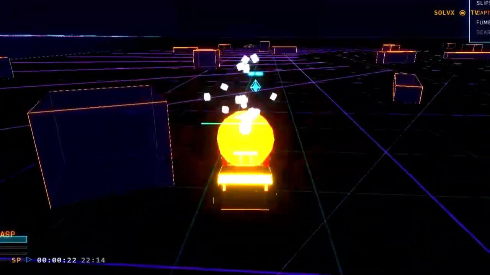
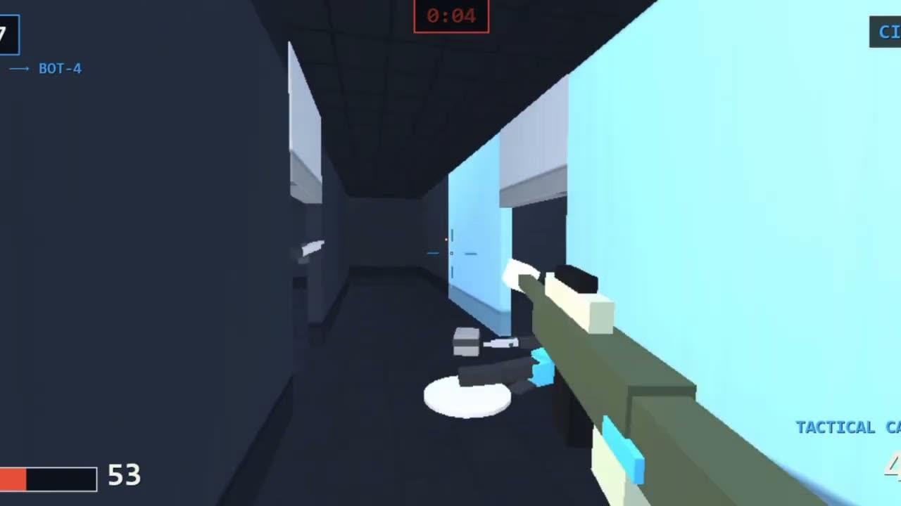
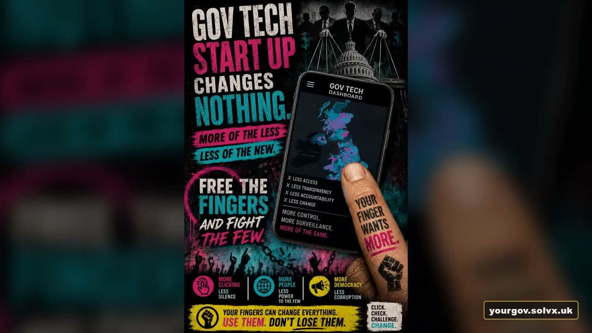
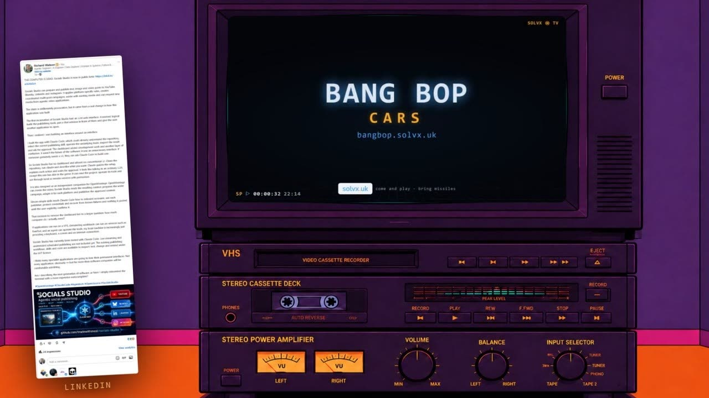

Project Bright · Public beta
Ask Project Bright for a video. Claude builds it in code.
Tell Project Bright what you want to make. Claude gives it everything it needs to build the video properly.
Give it footage or assets if you have them, or start from nothing. Claude handles the animation, editing, graphics, audio and timing in React and Remotion, then renders the result and keeps iterating with you.
Because the production is built in code, it can be almost anything: adverts, promos, explainers, motion graphics, social content, data-driven shows or something entirely new.
Made with Project Bright
Four productions.
A browser game advert, a software promo, a civic campaign and a product walkthrough — all built the same way, by asking for them.

Game promotion BangBop Cars A 36-second advert for a browser driving game — gameplay footage cut against motion graphics and a scored soundtrack.
Software promotion SPLITFIRE A 30-second product advert, with the music composed to the cut so the drop lands on an exact frame.
Civic communication YourGov "Your finger can be a hero" — a campaign film explaining how to see the way your MP actually votes.
Product walkthrough Socials Studio A short walkthrough of a social-media automation tool — captured screens, motion graphics and narration carrying a whole workflow.All four are on the solvX channel.
What is under the hood
A library of proven techniques, not a list of formats.
Months of real production have built up working methods for footage, animation, motion graphics, music, branding, explainers and social formats — the awkward parts, already solved and already tested. Fifteen Claude Code skills ship with the repo, so what was learned building the last video is loaded rather than rediscovered on the next one.
Tell Claude what you want and it uses, combines or rewrites whatever it needs to build it.
How it works
Clone it, prove it renders, then start describing what you want.
- Clone it. One repository, no services to stand up, nothing to deploy.
- Prove the install.
npm run hellorenders a real video and checks the file it produced — not the exit code. - Open Claude Code in the repository.
- Tell Claude what you want to make. In plain language, the way you would brief a person.
- Claude follows the Project Bright skills and authors the Remotion composition — the plan file, the timing, the assets, the checks.
- Render, inspect and iterate. Watch it. Change a number. Render again.
- You decide when it is done. Nothing publishes itself, and nothing is finished because a script said so.
# the first five commands
git clone https://github.com/tradewithmeai/project-bright.git
cd project-bright/apps/claude-remotion
npm install
npm run hello # renders the install proof and verifies the artefact
npm run dev # opens Remotion StudioClaude Code is a separate product, is not included with this repository, and needs its own subscription. It is how you use Project Bright: the skills are the interface the whole system is built around, and without them you are writing the Remotion yourself. Codex would probably work in its place — that is untested, so treat it as unsupported rather than as an option.
Why code?
Because a video you can read is a video you can fix.
Exact control over every frame
Nothing is approximate. A caption appears on frame 214 because something says frame 214, and you can change it to 208.
Deterministic timing
The same source produces the same frames. Motion is a function of the frame number, so a re-render is not a re-roll.
Real source control and diffs
You can see exactly what changed between two versions of a video, review it, and revert it. Not "the new one looks different".
Editable, not opaque
Generated output is something you accept or discard. A program is something you open and edit at the line that is wrong.
Failures turn into checks
A defect found once becomes a validator, a skill or a comment that fails loudly next time — instead of disappearing into a prompt nobody kept.
Public beta · v0.1.0-beta.1
What you need, and what to expect.
- Windows 11, tested
- Every measurement in the repository was taken on Windows 11. Nothing is known to be broken elsewhere, but nothing has been tested elsewhere either — treat macOS and Linux as unverified rather than supported.
- Node 22
enginesdeclares>=22.0.0. Developed and measured on v22.17.1.- Claude Code, with a subscription
- This is how you use Project Bright, and it is a separate product you supply yourself. Codex would probably work in its place, but that is untested and unsupported.
- Some optional workflows use paid APIs
- Voice, music, images and script generation call paid services when you choose to use them. None of that is needed to render what ships, and the voiceover path reserves against a spend ceiling before each call.
- Human review is load-bearing
- The automated checks pre-filter; they do not approve. Somebody still has to watch the video.
Get started
Clone Project Bright.
One clone, one install, one command that proves it renders. Then open Claude Code and start describing the video you want.
git clone https://github.com/tradewithmeai/project-bright.git